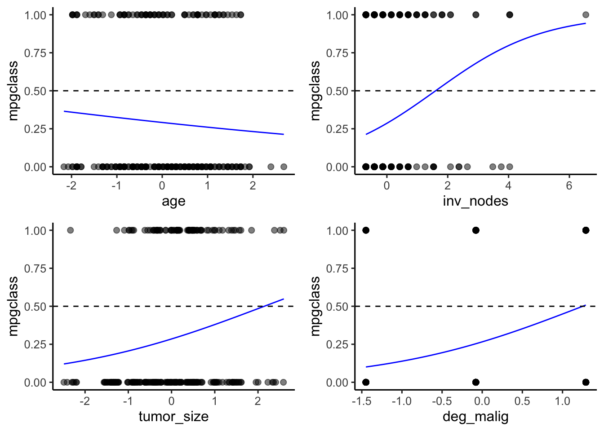

Chapter 3 Logistic Regression
3.1 General Logistic Regression Model
The second model we are going to use is the Logistic Regression Model.
We first build Logistic Regression model based on all the sleceted variables: tumor_zise, age, inv_nodes, deg_malig.
The train_dataset: test_dataset = 8:2.
## # weights: 6 (5 variable)
## initial value 153.878674
## iter 10 value 114.232266
## final value 114.226396
## converged## Call:
## nnet::multinom(formula = class ~ ., data = train.X)
##
## Coefficients:
## Values Std. Err.
## (Intercept) -1.1504766 0.1804155
## age -0.2245484 0.1664308
## inv_nodes 0.3202189 0.1626934
## tumor_size 0.1335999 0.1733618
## deg_malig 0.7702525 0.1920156
##
## Residual Deviance: 228.4528
## AIC: 238.4528We can conclude the specific model is: \(p(reoccur|x_1,x_2,x_3,x_4)=e^{-1.1504766-0.2245484x_1+0.3202189x_2+0.1335999x_3+0.7702525x_4}/(1+e^{-1.1504766-0.2245484x_1+0.3202189x_2+0.1335999x_3+0.7702525x_4})\)
## The prediction error rate is: 0.2363636From the AIC and Residual Deviance and the error rate on test dataset, we can see the model is not that ideal, and we then visualize the prediction outcomes to check the specific situation.
Due to a multifactor logistic regression, here we define \(temp = -1.1504766-0.2245484x_1+0.3202189x_2+0.1335999x_3+0.7702525x_4\)
We make plot that class versus temp values, then the cut-off line would be \(temp=0\), where \(e^{-1.1504766-0.2245484x_1+0.3202189x_2+0.1335999x_3+0.7702525x_4}=1\).
We can see that when in class noreoccur, the prediction is quite perfect, while all the errors happened in the class reoccur, the prediction is quite different with the truth. Inspired by the partial dependency, we can also plot the distribution of each factor to check the effect of the factor for classification.
3.2 Logistic Regression Model Based on Single Variable

In our Multi Factors Logistic model,we take the class noreoccur as the reference, and we can see all these four factors do not have very significantly differences in distributions between two class, the most obvious factor is age, we can see that if the model only judge the class based on age, the prediction would all be class noreoccur, which indicates the age distribution may be very similar in two classes, also we can conclude the cancer reoccurrence rate may have little relation with age.
And the best factor we can say from the above figures is inv_nodes, because the model more possibility to predict the sample as class reoccur. While the rest three factors would have less possibility to predict the sample as class reoccur. This tendency of distribution manily leads to that the logistic model based on all four factors may not tell the difference of two classes and have a tendency to predcit the sample as class noreoccur. We can also study the features of correct predictions to prove this.
3.3 Feature Distribution
Here we again plot the distribution of different features, and we use different color to represent the correct and wrong predictions,
Again, we can see in class reoccur, the correct prediction mostly happened in samples with unique values of factors, specially for feature inv_nodes, the correct predicted sample in class reoccur seems to have far distance with the other samples in class reoccur.